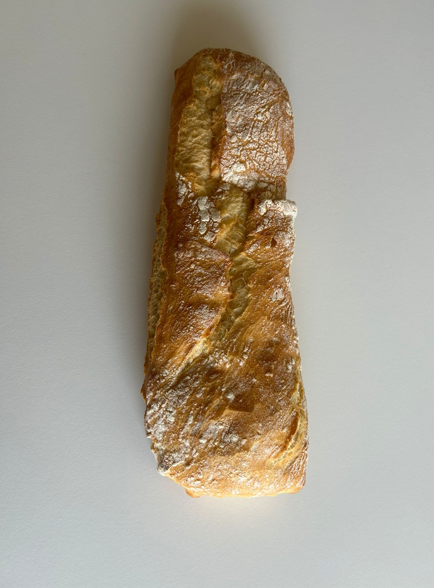
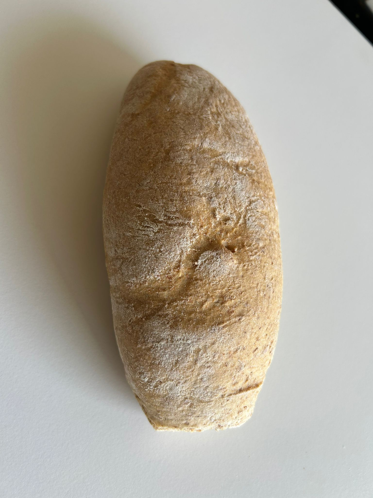
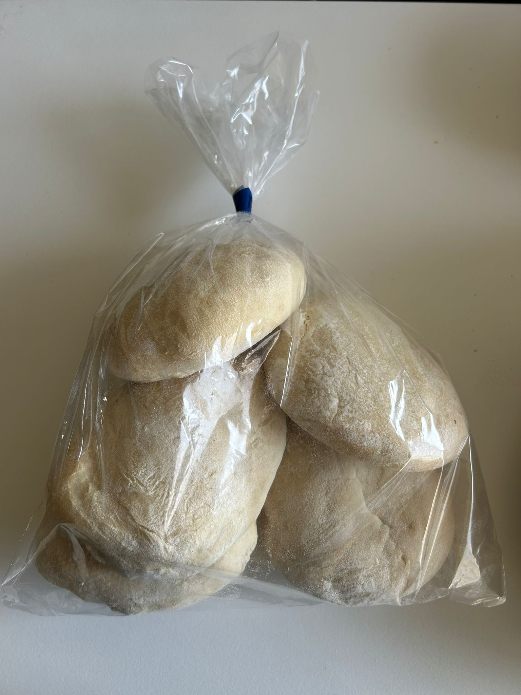
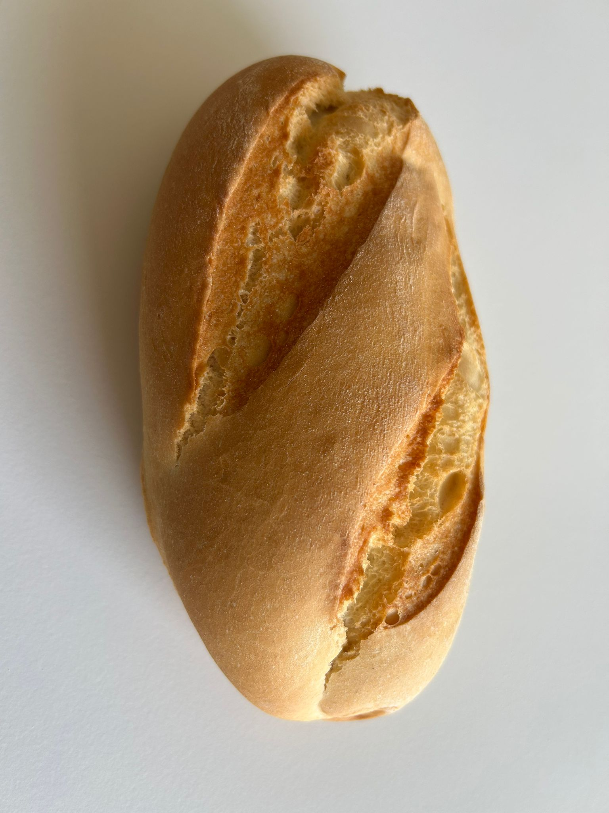
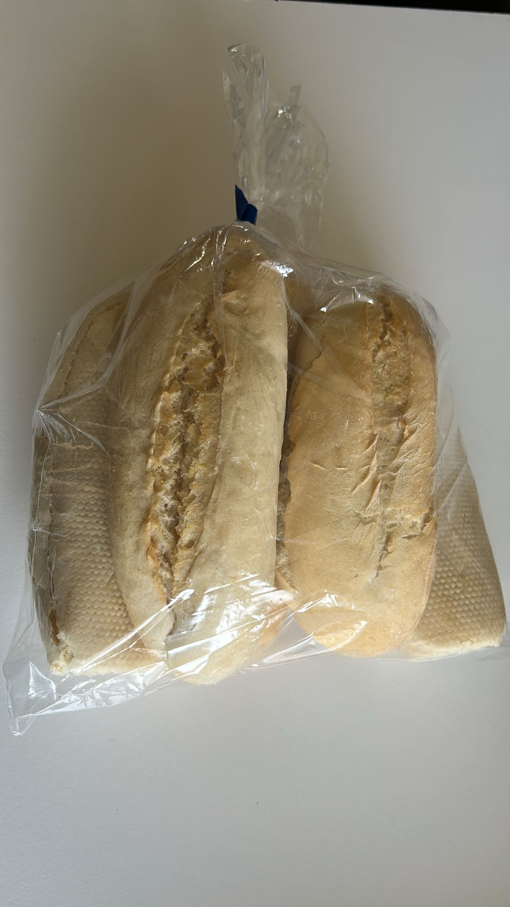
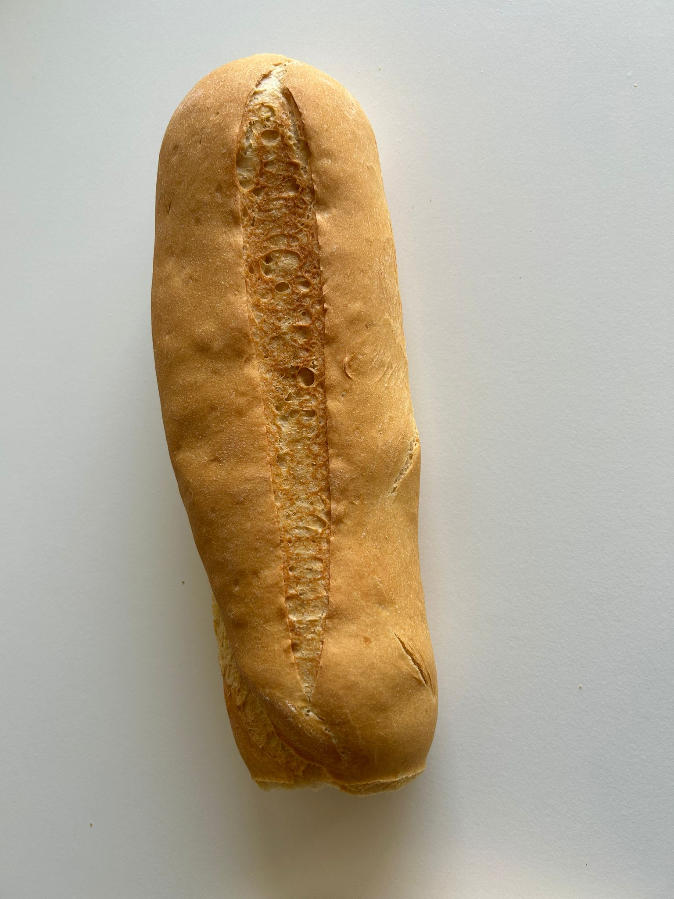

Pan artesanal elaborado con métodos tradicionales y fermentación natural.
Cada pan se elabora con ingredientes seleccionados y técnicas artesanales para ofrecer el mejor sabor y frescura.

Corteza crujiente con interior alveolado, perfecto para acompañar comidas o bocadillos.

Hecho con harina integral, con sabor intenso y textura firme, ideal para una dieta saludable.

Pan blando y tierno, perfecto para desayunos y tostadas con aceite o mermelada.

Corteza dorada y crujiente con miga firme, ideal para bocadillos o acompañar comidas.

Pequeños, crujientes por fuera y tiernos por dentro, perfectos para bocadillos o celebraciones.

Pequeñas y crujientes por fuera, ideales para meriendas o acompañar café.